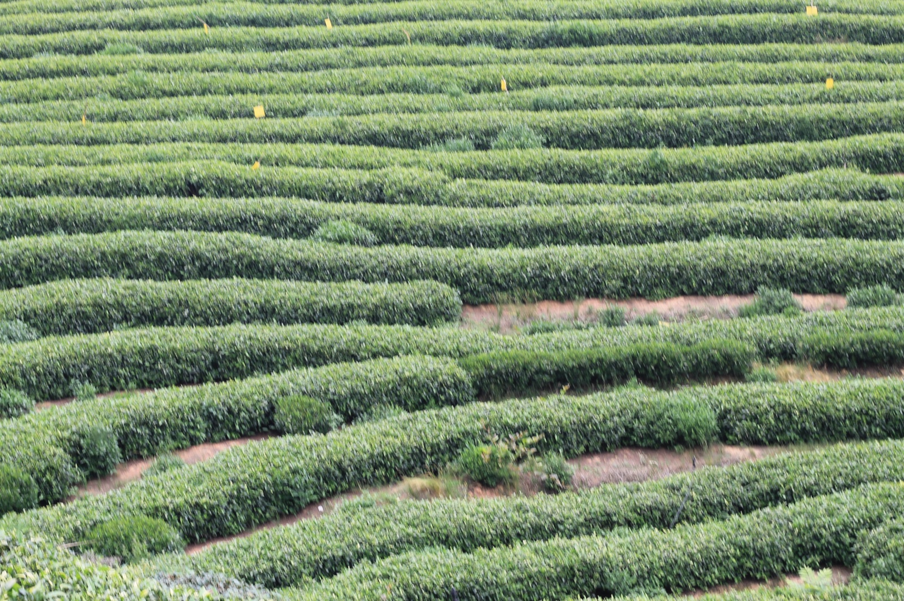

茶园与合作社
遂昌山区的茶园
合作社位于浙江省丽水市遂昌县山区。社员各自管护茶园，鲜叶统一收进合作社加工厂，按地块和日期分批加工。
- 社员
- 46 户
- 茶园
- 1280 亩分布在海拔 600–900 米的山坡上
- 加工厂
- 1 座绿茶、红茶生产线各 1 条
- 2025 年干茶产量
- 约 38 吨

本社茶园实拍待补充。
茶园管理
- 茶树品种
- 以鸠坑群体种和 龙井 43 为主，另有少量白叶一号。
- 除草
- 不使用除草剂，人工除草一年两次。
- 农药使用记录
- 按地块保存。
- 检测报告
- 待补充。
合作社沿革
- 2014 年
- 12 户茶农发起成立合作社。
- 2017 年
- 建成初制加工厂。
- 2019 年
- 增加红茶生产线。
- 2021 年
- 取得绿色食品认证。
- 2024 年
- 开始按地块记录采摘和加工批次。
资质
绿色食品认证证书编号待补充。
食品生产许可证编号待补充。
未做有机认证，产品不标“有机茶”。
加工与批次标签
- 鲜叶当天采、当天进厂。
- 摊青后杀青、揉捻、烘干。香茶为炒干；红茶在揉捻后增加发酵工序。
- 拣剔、分级，装铝箔袋后放入 0–5℃ 冷库。
每批茶的标签贴在袋口，写明地块、采摘日期和加工日期。
包装袋和价目单都使用同一套“岚坞”字样：手写体上方有三道起伏的山线。

本社加工厂实拍待补充。
茶园参观
- 接待季节
- 每年 3 月下旬至 5 月上旬
- 接待时段
- 每周六上午 9:00–11:30
- 人数
- 一次最多 15 人
- 邮件联系
- 需提前 3 天发邮件说明人数。
hello@lanwu-tea.luckye.online - 雨天安排
- 雨天采摘暂停，参观顺延。
- 参观内容
- 看采摘和加工，品当季茶。
- 参观费用
- 待补充。
- 食宿
- 不提供住宿和餐饮。
地址与交通
浙江省丽水市遂昌县，乡镇和门牌地址待补充。加工厂在村口，大客车能否进村待补充。